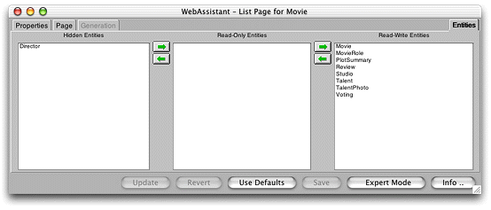

| PATH |

The Entities display of the WebAssistant enables you to specify which entities of the database model appear in the application. Of those entities, it further allows you to specify which are read-only and which the user can write data to. Records from read-only entities are restricted from appearing in edit pages.
The user interface for accomplishing these tasks is simple, as the following example illustrates:
To specify an entity that shouldn't appear in the application, select it and use the arrow keys to move it to the Hidden Entities column. To specify an entity that should be read-only, select it and use the arrow keys to move it to the Read-only Entities column. By default, all entities initially appear in the Read/Write Entities column.
© 2001 Apple Computer, Inc.